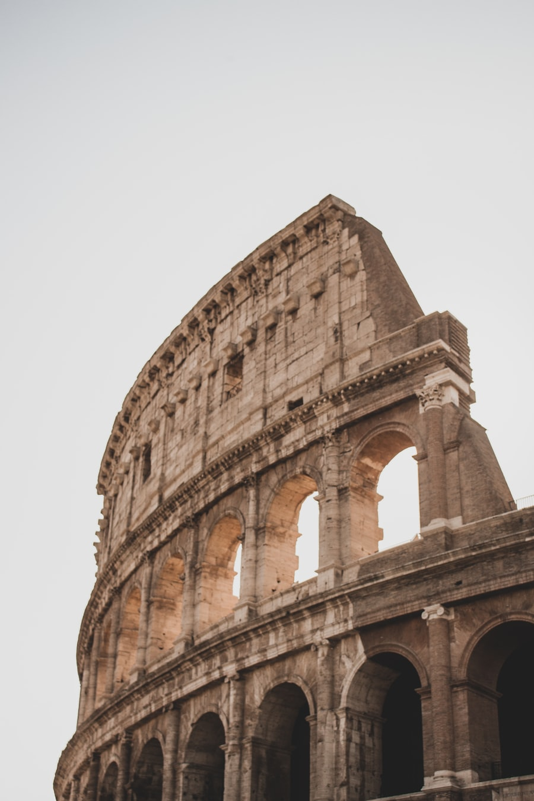
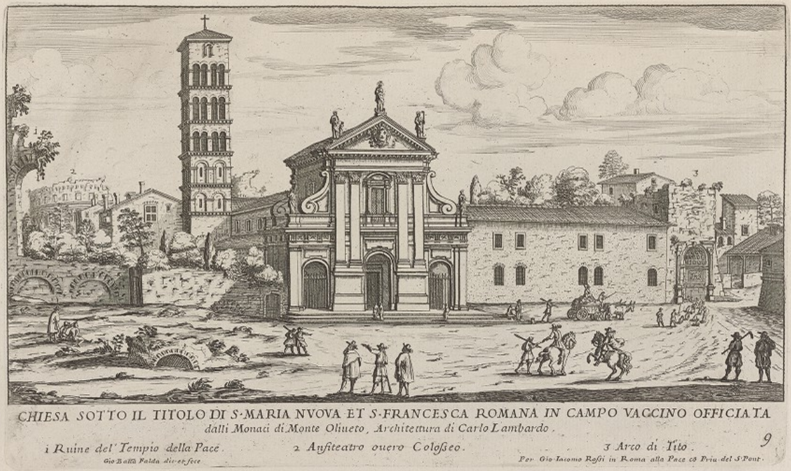
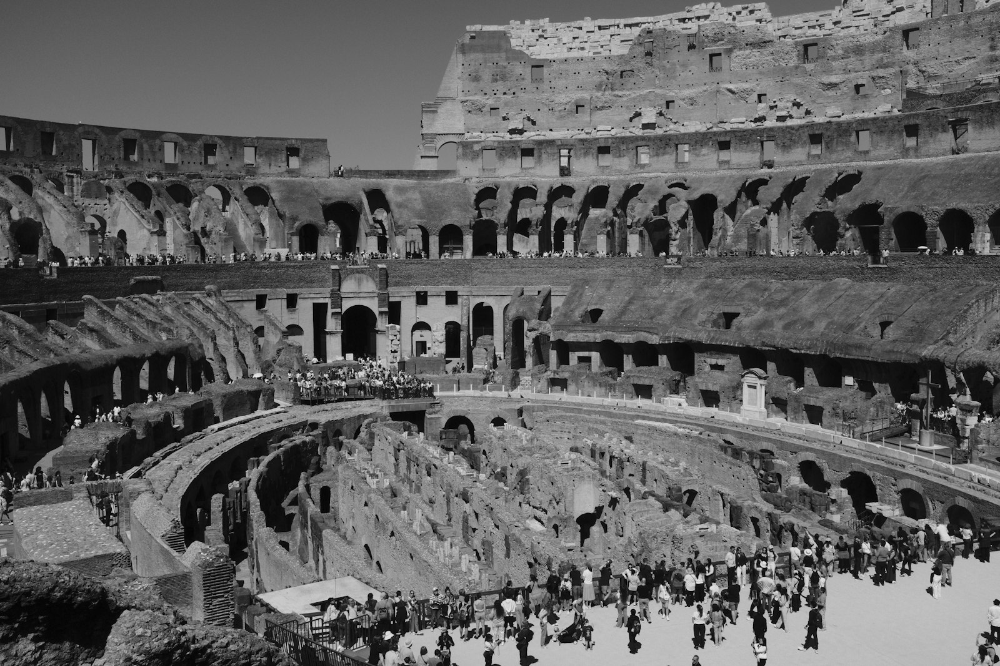
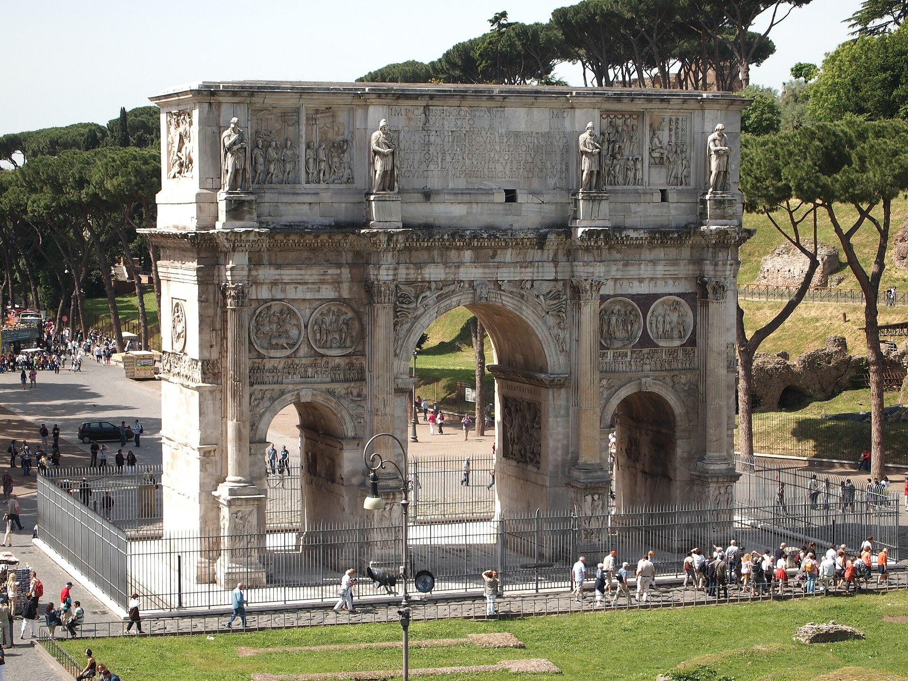

公元 70-80 年由弗拉维王朝三位皇帝接力建成，可容纳 5-8 万观众的圆形竞技场，是古罗马工程与娱乐文化的巅峰缩影。正式名称“弗拉维圆形剧场”，后世因近旁的尼禄巨像（Colossus）而得名 Colosseo。
看点路线
Il Percorso
- 1已约票入口进入后先上二层环形步道，俯瞰竞技场地坪与地下迷宫，这是最佳全景机位
- 2一层看角斗场地坪（arena 复原地坪段）与地下 hypogeum 结构（全票/导览票可下）
- 3二层常设展“角斗士的世界”：头盔、护具、角斗士墓志铭
- 4出口经君士坦丁凯旋门回望斗兽场，黄昏光线最好
建筑看点
Il Anfiteatro · 6 个必看细节

竞技场地坪与地下迷宫
场地之下曾有两层地下通道：32 个兽笼、80 台人力绞盘升降机，猛兽与布景可瞬间从地下“弹出”到地面。今天地坪只复铺了一段，裸露的迷宫就是当年舞台机关的内脏。

三层柱式立面
外立面自下而上依次是塔司干式、爱奥尼亚式、科林斯式半柱——文艺复兴建筑师（包括布鲁内莱斯基）都曾来此“抄作业”，它就是古典柱式的教科书。

观众席与社会等级
离场地最近的元老席是白色大理石座位，往上依次是骑士、市民、穷人和妇女，顶层柱廊则是水手与奴隶——座位即阶级，一目了然。80 个编号拱门入口让全场 15 分钟内疏散完毕，现代体育场的疏散设计仍沿用这一逻辑。
遮阳帆篷
顶层曾伸出巨型帆布篷为观众遮阳，操作者是米塞努姆舰队的海军水兵——把军舰上的索具技术用来给观众席“打伞”，是罗马人的浪漫。
火与地震的伤疤
现存只有北侧“外圈”完整——217 年大火、1349 年大地震先后摧毁了南侧，加上千年的“采石”，斗兽场其实是一座“幸存的四分之一”。

君士坦丁凯旋门
紧邻西侧出口，为纪念米尔维安桥战役而建，是罗马现存三座凯旋门中最新也最大的一座——文艺复兴以来的历代凯旋门（包括巴黎那座）都以它为原型。
历史故事
Le Storie
壹角斗士的一天
清晨，斗兽场外已排起小贩的摊位：卖羊肉串的、卖扇子的、卖角斗士“周边”木剑的。角斗士们先吃一顿大麦粥--现代考古发现他们的骨骼同位素显示惊人的素食比例，碳水化合物让他们长出一层“保护性脂肪”，皮肉伤不易致命。
上午是兽斗与处决，正午有幕间表演，压轴的角斗通常从下午开始。规则远比电影复杂：多数比赛有裁判（summa rudis）持棒执法，认输机制健全--举起一根手指或倒下举起短剑都可以求饶，观众的呼喊与出资人的手势决定生死。
“大拇指朝下处决”其实是后世想象：拉丁语原文 pollice verso 只说“转动拇指”，具体朝哪转，至今没有定论。职业角斗士是昂贵资产，主人并不舍得让他们随便死--墓志铭显示，有人打过几十场比赛后体面退役。
贰千年采石场
西罗马陷落后的斗兽场命运比角斗士更惨：它先是变成贵族的私人堡垒，继而被当成采石场--外层大理石贴面被剥走烧石灰，铁质夹钳被抠出来熔化，连嵌在混凝土里的铅都被挖出。圣彼得大教堂、拉特兰宫、帕拉蒂尼山上的法尔内塞花园，都用过它的石头。
1749 年，本笃十四世一纸敕令终结了这场千年拆解：他宣布斗兽场是早期基督徒殉道之地，下令保护。尽管现代史学对“殉道是否发生在此”颇有争论，但正是这个“宗教光环”救下了它。
今天它反过来成为罗马的守护符号：每五十年，复活节前夜的十字架巡游从斗兽场出发。一座几度被拆到只剩骨架的建筑，最终活成了“永恒之城”本身。
叁注水海战与地下迷宫
提图斯落成庆典的铭文记载，这座剧场“可注水表演海战”。学者一度以为是夸张修辞，直到考古证实：早期地下设施尚未建成时，中央场地确实可以蓄水，战船在“碗”里互撞。
图密善时期改建地下迷宫后，海战谢幕，机关时代开场：绞盘升降机把狮子、熊、豹连人带景送上地面--有文献记载一场开幕式中，一天之内放出一万只野兽。
站在二层俯瞰裸露的 hypogeum 时不妨想象：你脚下是一座两千年前的“剧场机械车间”，而地面上的每一次沙土翻动，都可能是机关升降留下的痕迹。
肆在暴君的湖上建人民的剧场
公元 64 年罗马大火后，尼禄把市中心烧毁的街区据为己有，修了金宫：人工湖、葡萄园、镀金的宴会厅。罗马人咬牙切齿--皇帝抢走了整座城市的中心。
公元 69 年韦斯帕芗上台，做了教科书级的政治表态：抽干金宫的人工湖，在“暴君的湖”上给人民建一座大剧场。弗拉维王朝的三位皇帝接力建成它，剧场落成后民间立刻叫它 Colosseum--借近旁那尊尼禄巨像（Colossus）反讽暴君。
权力的空间修辞学：同一块地，从一人独享变成五万人共享。斗兽场从选址那天起，就是一份政治声明。
伍观众席上的零食与赌局
考古学家在斗兽场的排水沟里打捞出观众留下的“零食证据”：瓜子壳、果核、无花果籽与骨头--罗马人看比赛嗑瓜子，和今天看球一模一样。
涂鸦研究还原了更鲜活的一面：外墙与立柱上发现赌博涂记，角斗士的胜率像赛马赔率一样被记录讨论；某处涂鸦写着一位明星角斗士的战绩与“粉丝”留言。
看台分坐垫等级，顶层站着的是穷人，中场休息有小贩穿行卖水与蜜酒。体育场的商业模式两千年没变过，变的是票价货币。
陆女角斗士与 200 年的禁令
文献与铭文里都出现过女角斗士：尼禄时代有贵族女子下场取乐，一世纪的铭文记载女角斗士之间的对决。2001 年伦敦一座罗马墓出土的骨骸（约 20 岁女性，与角斗士同葬器物），被广泛解读为女角斗士。
公元 200 年，塞维鲁皇帝下令禁止女性参战--一纸禁令反过来证明：她们此前一直在场。
在斗兽场想象她们时，请记住古罗马人自己也震惊过：编年史家留下过观众看到女角斗士时的错愕记录。历史里惊讶的声音，往往最真实。
柒凝灰岩、火山灰与罗马混凝土
斗兽场的材料清单是一本工程教科书：地基凝灰岩、拱券 travertine（石灰华，铁件夹固不用灰浆）、填充体罗马混凝土。混凝土的关键是那不勒斯湾的火山灰--遇水成浆、越泡越硬。
近年材料学研究甚至发现：罗马混凝土里的晶体成分会“越裂越补”。2 世纪的配方，21 世纪的实验室还没完全复刻。
摸一摸（允许摸的地方）那些大块的石灰华：那些铁质夹钳在中世纪被抠走熔化留下的孔洞，就是这座建筑“被回收”过的弹孔。
捌修士之死与角斗的终结
传说公元 404 年，一位叫忒勒马科斯的东方修士跳进竞技场，张开双臂隔开两名角斗士，高呼“以上帝之名停止”--愤怒的观众用石块把他砸死在场中。
传说继续说：主持者霍诺留皇帝被这一幕震动，随后下令取缔角斗。史实层面的细节虽有争论，但角斗表演确实在 5 世纪初走向终结：440 年代文献中的角斗记载已渐稀薄。
一场表演的死亡需要一个殉道者作为句号--无论那个修士是否真的存在，罗马人都为自己编了一个。这本身就是一种文明的自白。
玖废墟美学的诞生
中世纪的斗兽场挤进民房、作坊与垃圾堆，没有“废墟”的概念--废墟只是没拆完的建材。是文艺复兴的画家与 18 世纪的版画家把它变成了“美”。
皮拉内西的蚀刻版画让斗兽场的残缺轰动了整个欧洲：破碎的拱、野蛮生长的植物与月光，构成一种全新的审美--“崇高”由此成为美学关键词，旅行者开始专程来看残骸。
你今天举起手机拍的那道残缺的环，是三百年前才被发明出来的风景。废墟是被历史撞碎后，又被艺术捡起来的东西。
拾现代体育场的老祖宗
看一眼你家乡的体育场：编号入口、分区看台、椭圆跑道与疏散动线--这套设计语言的总语法书，写在公元 80 年。
80 个编号拱门让五万观众在一刻钟内疏散完毕；地下“后台”升降景与选手；顶层帆篷遮阳系统由水兵操作。现代球场做的每件事，斗兽场都做过一遍。
2006 年后罗马市民多次讨论给斗兽场“复原地板”以重现角斗视野，2023 年可逆的新地板终于启用：一座两千岁的建筑，还在更新它的固件。
参观贴士
Consigli Pratici
- 联票含罗马广场与帕拉蒂尼山，建议三地同一时段游（09:00 斗兽场 -> 11:00 罗马-> 13:00 帕拉蒂尼是经典动线）
- 地下层 Hypogeum 与 Arena 展需在标准票外加购，10 月票量紧张，提前 1 个月官网放票即抢
- 北侧（地铁出站一侧）适合清晨顺光拍照，西侧适合黄昏
- 场内遮阴极少，10 月中午依然暴晒，带水与帽子
- 门口穿角斗士盔甲的“合影收费人员”宰客无底线，摇头走开
顺路同游
Da Non Perdere